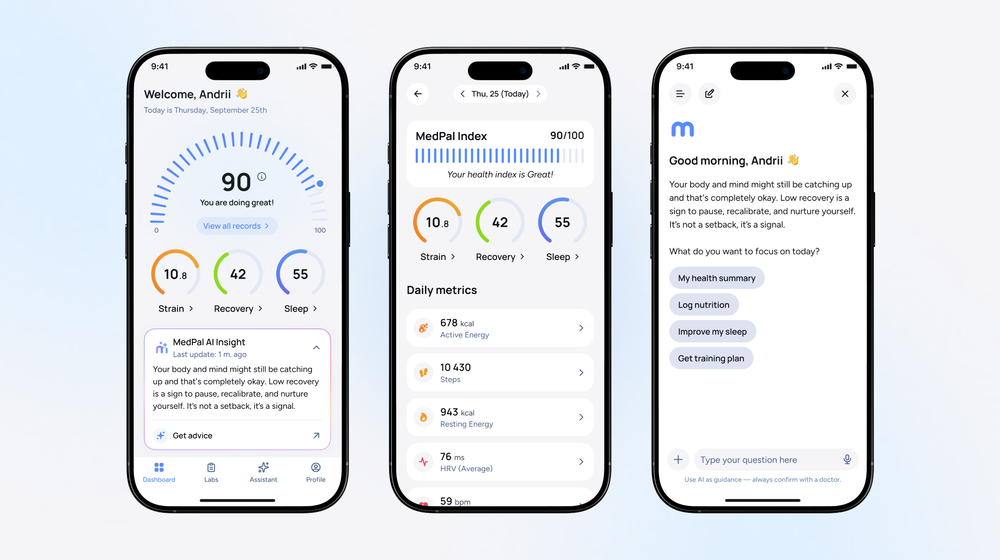
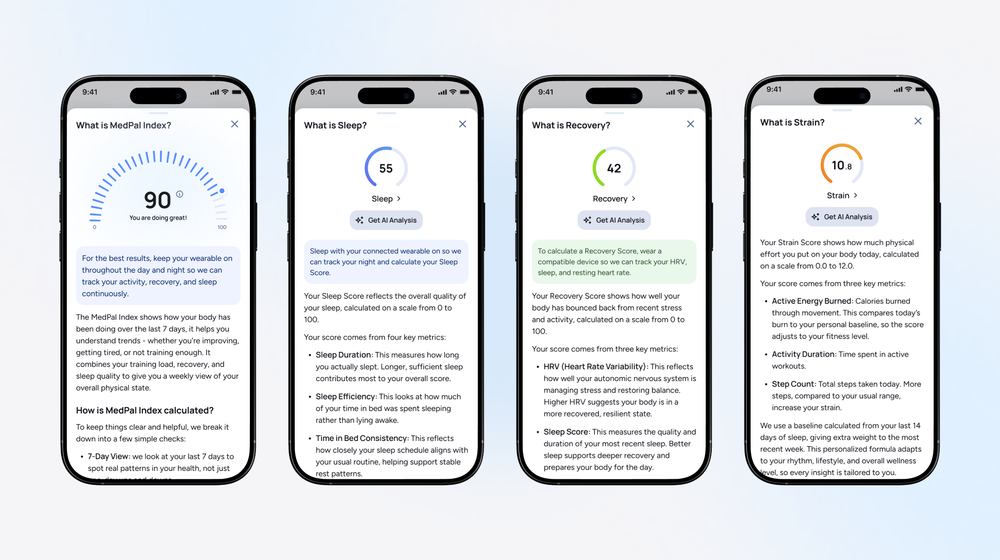
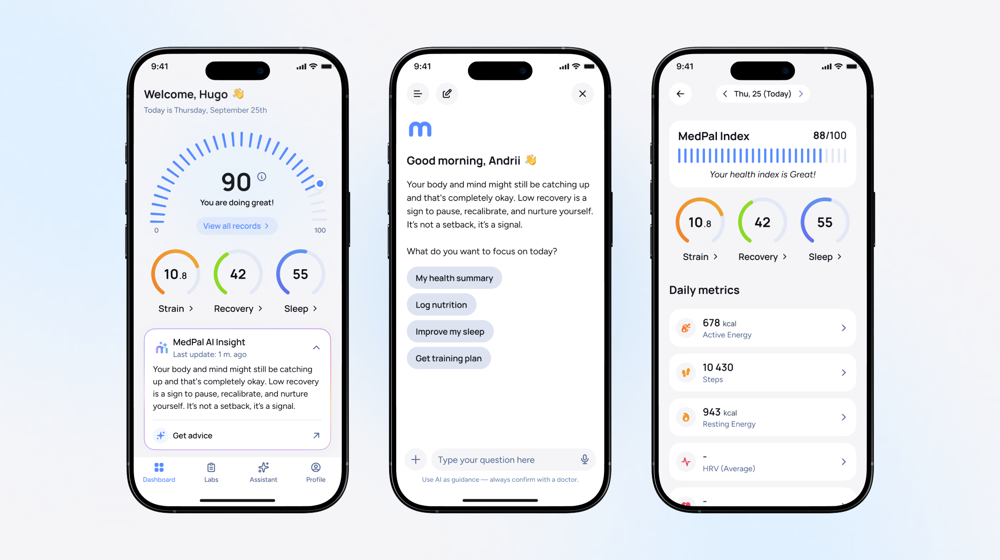
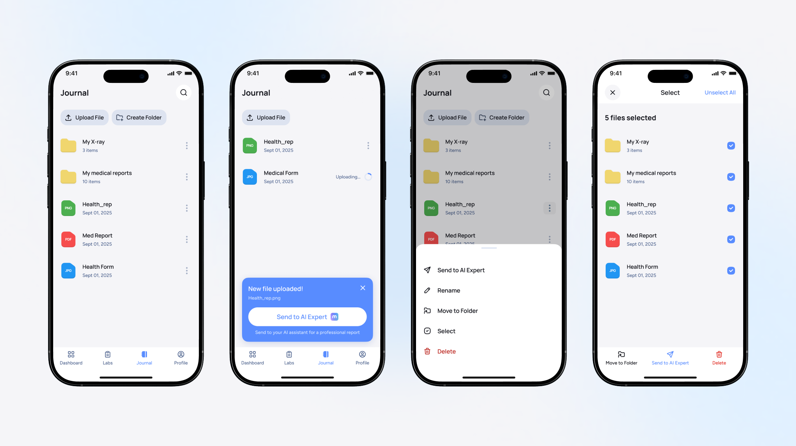

MedPal AI —
AI Health Companion
Consumer-first platform that unifies wearable data, delivers AI-powered health insights, and proactively monitors wellbeing.
HealthTech
Mobile App
AI / Voice UX
iOS & Android
Design System
UK · 2025
01 — Overview
Project Overview
MedPal AI is a consumer-first health and wellness platform for the UK market. As the Senior Product Designer, I designed the entire mobile experience end-to-end — from onboarding and wearable integration to AI chat flows and voice health agent.
The product raised £500k+ in pre-IPO funding and completed its admission to the AIM Market of the London Stock Exchange in June 2025. I worked directly alongside the CEO (serial founder, 11 IPOs) and Dr. Kevin O'Neill — Senior Consultant Neurosurgeon at Imperial College NHS Trust — translating complex medical AI concepts into a calm, trustworthy consumer experience.
02 — Problem
Problem Statement
Over 1.3 billion people are expected to use digital health tools in 2025. 44% of US adults already own a wearable device — yet their health data remains scattered across a dozen apps, none of which talk to each other.
Existing platforms solve only one piece: wearables track isolated metrics, telehealth apps offer reactive consultations, wellness apps surface generic advice. Nobody synthesizes it all — and nobody proactively warns you before something goes wrong.
Market reality
44% of US adults own a wearable health device, up from just 21% in 2019 — yet most still can't answer a simple question: "How healthy am I, really?"
01
Fragmented health data
People use Apple Watch, Garmin, Fitbit, Whoop simultaneously — but their data lives in isolated silos. No unified view exists.
02
No actionable insights
Devices collect heart rate, sleep, steps, oxygen — but none translate raw numbers into personalized, actionable guidance.
03
Reactive, not preventive
People lack early warning systems for stress, metabolic risks, or heart conditions. Healthcare is consulted only after symptoms appear.
03 — Solution
Three Pillars of MedPal
The product is built around three interlocking capabilities. Each required a distinct design approach — from data visualization and trust design to conversational UX and voice-first interaction.
01 — COLLATE
All your health data, unified
MedPal aggregates data from 200+ devices via Apple Health, Google Fit, and Google Health Connect. Each wearable uses different tech — Garmin uses Webhooks, Fitbit uses REST APIs. The UX challenge: make this complexity invisible, Health Score instantly readable.
Apple Health
Google Fit
200+ devices
02 — MEDPAL INDEX
Your one score that actually means something
MedPal Index is a single, unified score built on sleep, recovery, and strain — giving you a clear picture of how you truly feel today. Not raw numbers scattered across apps, but one meaningful signal that reflects your body's real state and guides your next move.
Sleep
Recovery
Strain
Unique score
03 — AI ASSISTANT
Your personal health companion, always in context
MedPal Assistant knows all your health metrics in real time. Ask anything about your wellbeing — get personalized, data-grounded advice. It also proactively checks in, spots patterns before you do, and helps you stay on top of everything that matters to your health.
Proactive check-ins
Real-time context
Health advice

04 — Design Challenges
Key Design Problems I Solved
Each feature came with a concrete UX challenge. Here's what I was actually designing for — not just what it looks like, but why it works.
01
Health Score as a single source of truth
Users receive data from 200+ sources. The challenge: collapse heart rate, steps, sleep, calories, oxygen into one number (0–100) that feels trustworthy — without oversimplifying. Designed a gauge component with contextual color, history sparkline, and drill-down sub-scores.
02
Zero-friction wearable onboarding
Each wearable exposes data differently (Webhooks, REST, OAuth). The user sees none of this — just a single "Connect" flow. Designed permission screens that explain value before asking for access, completing in under 2 taps.
03
Medical AI Assistant chat that doesn't feel clinical
MedPal provides non-clinical health guidance and must never be mistaken for medical advice. Designed the chat UX with clear "Health Expert" persona framing, warm tone, and explicit escalation paths to licensed professionals — while keeping the experience conversational.
04
Trend View — always aware of how you're doing
MedPal builds personal trends from all your health data over time — sleep patterns, recovery curves, strain history — and surfaces actionable insights from them. The design challenge: make long-term data feel alive and relevant day-to-day, so users stay consistently aware of their health trajectory and how well they're keeping up with it.
05
Journal — your medical and sport data, analysed by AI
A dedicated space to upload medical reports, lab results, and sport performance files — and send them directly to the MedPal AI Assistant. The challenge: designing a file-to-insight flow that feels effortless, not clinical. Users get instant AI summaries and actionable takeaways from documents they'd otherwise leave unread.
05 — Key Screens
Selected UI Screens
High-fidelity screens across the core user flows — onboarding, dashboard, AI chat, expert discovery, trend view, and journal.
Onboarding & wearable connection
Profile setup · Apple Health connect · Permission flow

Dashboard
Today's metrics · AI advice cards · Activity overview

MedPal Index
Unified health score · Sleep · Recovery · Strain

Trend View
Personal trends · Long-term patterns · Consistency insights

Expert AI & chat
Expert discovery · AI conversation · Voice mode


Journal
Upload medical & sport files · AI summary · Actionable insights

06 — Architecture
Product Ecosystem & IA
MedPal sits at the intersection of consumer wearables, medical AI, and telehealth. Designing the IA meant mapping data flows between fundamentally different systems and making the seams invisible to the user.
MedPal ecosystem — data & services map
User data layer
Apple Health / Google Fit
Medical Records + Test Results
Garmin · Fitbit · Whoop · 200+
AI & services layer
AI Models (OpenAI, Grok…)
AI Agents (background monitoring)
Telehealth / Telemedicine partners
07 — Market Positioning
Competitor Analysis
Mapped the competitive landscape across two axes: technological innovation and functional health benefits. MedPal occupies the top-right — a white space no existing product fills.
Fitbit / Garmin / Whoop
Wearables
Track isolated metrics. No AI synthesis, no actionable guidance. Data siloed to single ecosystem.
Teladoc / Amwell
Telehealth
Strong clinical network but purely reactive. No wearable integration, no proactive monitoring.
Hims & Hers / Nestlé Health Science
Consumer Health
Strong brand, growing fast. Focused on specific conditions — not a broad AI health companion.
MedPal AI ↗ — Top-right quadrant
Integrated Health
Only platform combining: 200+ device integration + AI-powered personalized insights + proactive background monitoring + voice health agent + telehealth escalation.
08 — Results
Final Results
From product concept to publicly listed company — in under a year.
IPO
Admitted to the AIM Market of the London Stock Exchange, June 2025.
Led by CEO Jason Drummond — 11 IPOs on global stock exchanges
£500k+
Pre-IPO funding raised. Product design used directly in investor fundraising deck.
Pre-IPO investment round · May 2025
11M+
Potential users via Epassi partnership — UK's largest corporate health network, 2,000+ companies.
Distribution channel secured pre-launch
"Design was central to the fundraising story — the product UI went directly into the pre-IPO investor deck and was instrumental in communicating the platform's vision to stakeholders."
— Project outcome summary, May 2025